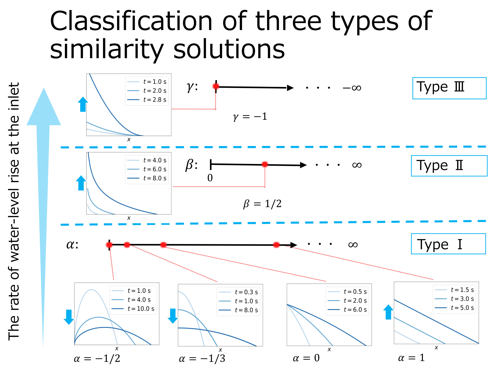
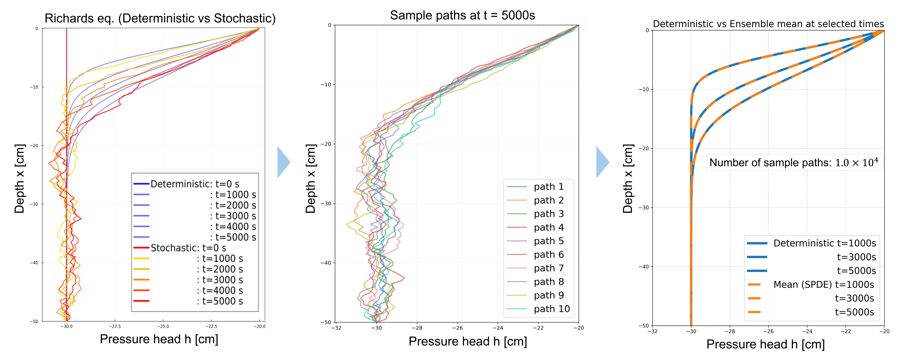

MSc student, Graduate School of Agriculture, Kyoto University, Japan
Water Resources Engineering Laboratory
Contact: togo.shuntaro.66s [at]st.kyoto-u.ac.jp
Mathematical and numerical modeling of groundwater and soil–water processes
Modeling and analysis of subsurface water flows
Similarity solutions and nonlinear dynamics of unconfined aquifers.
Stochastic processes for soil water flow
SPDE formulations of soil moisture transport and particle-based simulations.
Papers
Presentations